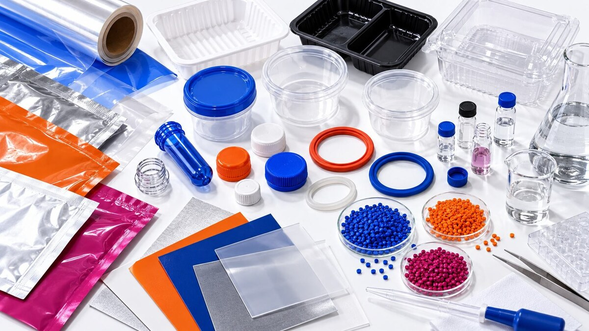

|
28 OTTOBRE 2026
|
Bisfenoli nei MOCA:
il 20 luglio è già passato
|
|

|
| Il 20 luglio 2026 è già passato. Questa data ha segnato una tappa importante nell'applicazione delle disposizioni transitorie del Regolamento (UE) 2024/3190, relativo al Bisfenolo A (BPA) e ad altri bisfenoli in determinati materiali e oggetti destinati al contatto con alimenti. Oggi la domanda è: hai già verificato la situazione dei tuoi prodotti? |
| Il Regolamento (UE) 2026/250 ha successivamente rettificato le disposizioni, precisando anche alcuni periodi transitori. La scadenza è passata, ma per le aziende resta essenziale verificare quali requisiti e deroghe si applicano ai propri materiali e prodotti. |
| Il 20 luglio è passato: cosa occorre verificare adesso? |
| La data rappresenta il termine generale previsto per la prima immissione sul mercato di determinate categorie di MOCA non conformi alle nuove restrizioni, fatte salve le deroghe applicabili. |
| Dopo il 20 luglio 2026 non tutte le situazioni sono uguali: per alcuni articoli sono previsti termini transitori differenti e regole specifiche sulla permanenza sul mercato. È quindi importante distinguere la tipologia di prodotto, la data della prima immissione sul mercato e la documentazione disponibile. |
| L'obiettivo della normativa è limitare non soltanto il BPA, ma anche altri bisfenoli e derivati con specifiche classificazioni di pericolo. |
| Quali materiali sono maggiormente interessati? |
| Per i MOCA, l'attenzione è rivolta soprattutto a: |
| materiali plastici; |
| articoli in gomma; |
| rivestimenti e vernici; |
| adesivi; |
| inchiostri da stampa; |
| componenti multistrato utilizzati negli imballaggi alimentari. |
|
| Cosa devono fare le aziende? |
| Per verificare la conformità dei propri MOCA è utile concentrarsi su quattro aspetti: |
| verifica delle materie prime e delle formulazioni; |
| aggiornamento della documentazione dei fornitori; |
| valutazione della presenza di BPA e altri bisfenoli; |
| revisione delle dichiarazioni di conformità e dei piani di controllo. |
|
| Le verifiche possono comprendere la determinazione dei bisfenoli, prove di migrazione specifica e valutazioni di sostanze non intenzionalmente aggiunte (NIAS), in funzione della tipologia di materiale e dell'applicazione prevista. |
| Dopo il 20 luglio: la tua documentazione è aggiornata? |
| Concentrarsi soltanto sul BPA potrebbe non bastare: il quadro normativo riguarda anche altri bisfenoli e derivati con specifiche classificazioni di pericolo. La verifica deve tenere conto della composizione dei materiali, delle condizioni d'uso e dei requisiti applicabili alla filiera. |
| Dati analitici affidabili e documentazione aggiornata aiutano a gestire richieste di clienti, distributori e autorità di controllo e a dimostrare la conformità ai requisiti applicabili. |
Analisi di laboratorio, verifica documentale
e supporto tecnico consentono di valutare
la conformità dei MOCA ai requisiti
introdotti dal Regolamento (UE) 2024/3190
e chiariti dal Regolamento (UE) 2026/250.
|
|
|
|